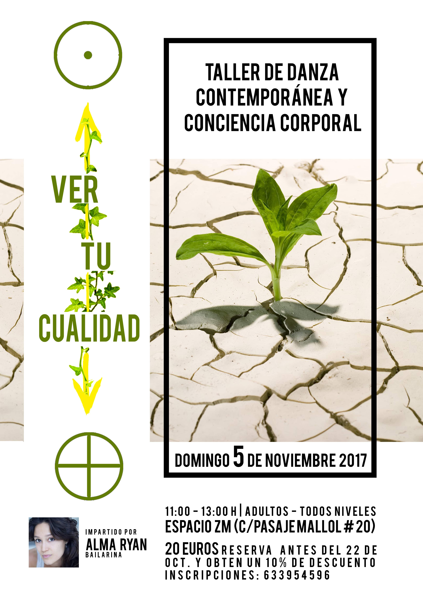

Programme des cours de Flamenco 2020

Cours de contemporain et conscience corporelle 2017
Cours de contemporain et conscience corporelle 2017
Dès son retour en France en 2018 Alma enseignera deux années durant le flamenco dans le 13ème arrondissement de Paris
via l’association Temps Dance Orsay.
En octobre 2020, elle obtient le Diplôme d’Etat de professeur de danse – option danse contemporaine*. Depuis elle a
rejoint l’équipe administrative, pédagogique et artistique des RIDC – où elle s’est elle-même formée. Elle enseigne la
danse contemporaine à un public varié : enfants, adolescents et adultes – association des RIDC et association Temps
Dance.
Enfin la même année elle intègre le Conservatoire National Supérieur de Musique et de Danse de Paris – CNSMDP pour se
former au système de notation Benesh.
La notion de mémoire et l’accès au répertoire chorégraphique que lui apporte l’apprentissage de cette écriture du
mouvement nourrit sa pédagogie et ses recherches artistiques actuelle.
*examen repoussé suite à la crise sanitaire du Covid19 mais assuré en présentiel à Paris.